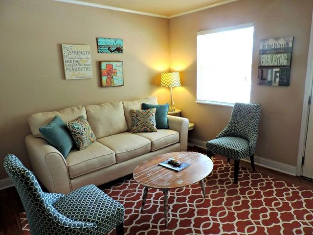
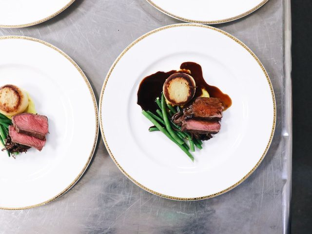
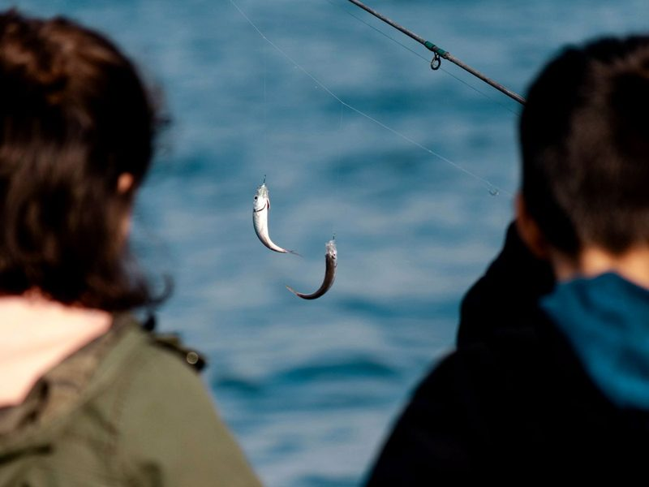
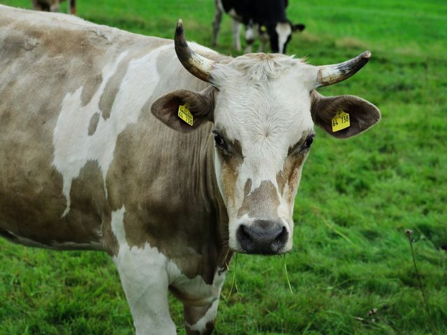
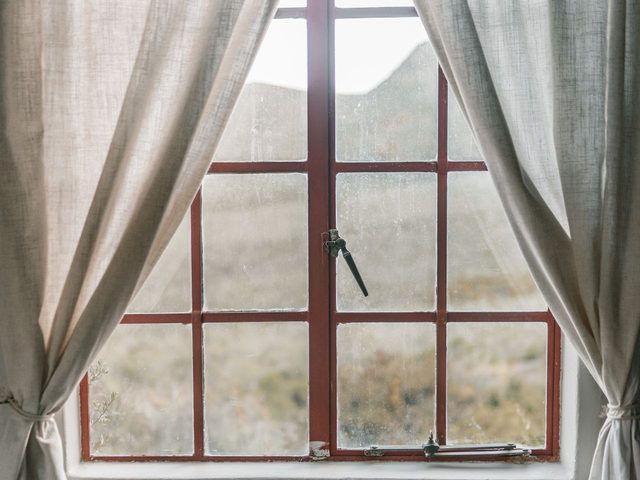

VOCABULARY · WORD UP 單字複習 UNIT 12
C-V．C 開頭（五）
WORD UP「C-V」的 38 個字（cotton 到 cute）。紅色＝要複習，藍色標籤＝WORD UP 標熟記、還要在這裡考對。
共 38 個單字．點 🔊 聽發音
1cottonn.
棉；棉花
This T-shirt is made of cotton.這件 T 恤是棉做的。

2couchn.
長沙發
= sofa
Dad fell asleep on the couch.爸爸在沙發上睡著了。
3coughv./n.
咳嗽
gh 唸 /f/
I have a bad cough.我咳得很厲害。
4couldaux.
能夠（can 的過去式）；可以…嗎
Could you…? 比 Can you…? 客氣
Could you open the window, please?可以請你打開窗戶嗎？

5countv.
數；計算
count on 依靠
Can you count from one to ten in English?你會用英文從一數到十嗎？
6countryn.
國家；鄉下
複數 countries；in the country 在鄉下
Japan is a beautiful country.日本是個美麗的國家。
7countrysiden.
鄉間
We spent the weekend in the countryside.我們週末在鄉下度過。
8countyn.
縣
Yilan County 宜蘭縣
My grandparents live in Yilan County.我爺爺奶奶住在宜蘭縣。
9couplen.
一對；夫妻
a couple of 兩三個
The young couple just got married.那對年輕夫妻剛結婚。
10couragen.
勇氣
brave 的名詞意思
It takes courage to say sorry.說對不起需要勇氣。

11coursen.
課程；路線
of course 當然
I am taking an English course.我在上英文課程。

12courtn.
球場；法院
basketball court 籃球場
The kids are playing on the basketball court.孩子們在籃球場上打球。

13cousinn.
堂／表兄弟姊妹
My cousin is the same age as me.我表哥跟我同年。

14coverv./n.
覆蓋；封面
be covered with 被…覆蓋
The mountain is covered with snow.山被雪覆蓋。

15cown.
母牛；乳牛
Cows give us milk.乳牛提供我們牛奶。

16crabn.
螃蟹
A crab walks sideways.螃蟹橫著走。

17crayonn.
蠟筆
My little sister draws with crayons.我妹妹用蠟筆畫畫。
18crazyadj.
瘋狂的；著迷的
be crazy about 對…著迷
He is crazy about baseball.他非常迷棒球。

19creamn.
奶油；乳霜
ice cream 冰淇淋
I want strawberry ice cream.我要草莓冰淇淋。
20createv.
創造
名詞 creation
Artists create beautiful things.藝術家創造美的東西。
21crimen.
罪；犯罪
criminal 罪犯
Stealing is a crime.偷竊是犯罪。
22crisisn.
危機
複數 crises
The flood caused a water crisis.水災造成用水危機。
23crossv./n.
越過；十字
cross the street 過馬路
Look both ways before you cross the street.過馬路前要左右看。

24crowdn.
人群
There was a big crowd at the concert.演唱會上人潮洶湧。
25crowdedadj.
擁擠的
be crowded with
The MRT is crowded in the morning.早上的捷運很擠。
26crueladj.
殘忍的
be cruel to + 人／動物
Don't be cruel to animals.不要虐待動物。
27cryv./n.
哭；叫喊
過去式 cried
The baby cried all night.寶寶哭了一整晚。
28culturen.
文化
I want to learn about Japanese culture.我想了解日本文化。
29cupn.
杯子
a cup of + 熱飲
Would you like a cup of tea?你要喝杯茶嗎？
30curev./n.
治癒；療法
Doctors are looking for a cure for the disease.醫生在尋找這種病的療法。
31curiousadj.
好奇的
be curious about
Kids are curious about everything.小孩對什麼都好奇。

32currentadj./n.
目前的；水流
current events 時事
What is your current address?你目前的地址是什麼？

33curtainn.
窗簾；布幕
Please close the curtains.請把窗簾拉上。
34curven.
曲線；彎道
Drive slowly around the curve.轉彎處要慢慢開。
35customn.
習俗
customs 海關
Eating mooncakes is a Moon Festival custom.吃月餅是中秋節的習俗。

36customern.
顧客
The store has many customers today.這家店今天客人很多。

37cutv./n.
切；剪；割傷
三態都是 cut
I cut my finger with a knife.我被刀割到手指。

38cuteadj.
可愛的
What a cute puppy!好可愛的小狗！
FOCUS
容易搞混的字
| 字 | 用法 | 例子 |
|---|---|---|
| country / county / countryside | 國家 ／ 縣 ／ 鄉間 | a big country ／ Yilan County ／ live in the countryside |
| crowd / crowded | 人群（名詞）／ 擁擠的（形容詞） | a big crowd ／ a crowded bus |
| custom / customer | 習俗 ／ 顧客 | an old custom ／ a happy customer |
| course / court | 課程 ／ 球場、法院 | an English course ／ a tennis court |
| curious / cruel | 好奇的 ／ 殘忍的 | a curious cat ／ a cruel man |
FOCUS
常考片語
| 說法 | 中文 | 例子 |
|---|---|---|
| of course | 當然 | Of course you can. |
| be covered with | 被…覆蓋 | covered with dust |
| be crazy about | 對…著迷 | crazy about K-pop |
| be curious about | 對…好奇 | curious about space |
| a couple of | 兩三個、幾個 | a couple of days |
| cross the street | 過馬路 | cross the street carefully |
Could you…? 是比 Can you…? 更客氣的請求。